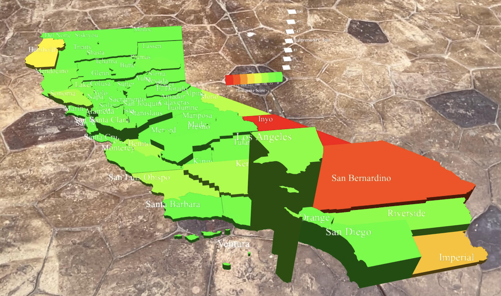

Security Detection Engineer
Santa Cruz, CA
jacob.d.low@gmail.com
I am a Computer Science and Engineering Master’s student at the University of California Santa Cruz.
Throughout my undergraduate education, my main focus has been directed toward the field of data visualization and engineering. I have extensive experiance creating dynamic visualization tools with D3.js.
This past summer I interned at Databricks where I designed and implemented interactive visualization for security analytics with the detection team.
As a graduate student, I am pursuing a concentration in Artificial Intelligence and Computer Security. I am also a Teaching Assistant for an undergraduate Data Visualization course taught with D3.js!
Identified California counties most vulnerable to earthquakes through data visualization. Built an 3D map with AR support using Three.js and Mozilla XR Engine and interactive choropleth maps with D3.js to explore relationship between seismic data and structural ratings of California infrastructure. Awarded 1st place in class competition.
Developed a website to help lost pets find their way home with three other students with vue.js and py4web. Hosted site on Google App Engine with database on Google Cloud SQL and blobs on Google Cloud Storage.
Web Development! All I need to know in one place